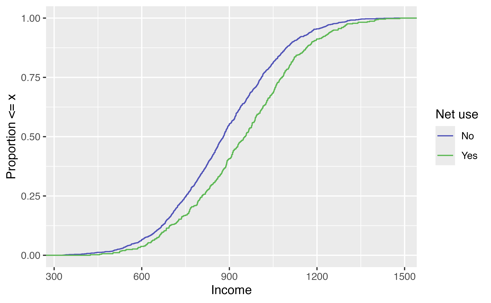

Propensity Score Diagnostics
Lucy D’Agostino McGowan
Wake Forest University
Checking balance
- Love plots (Standardized Mean Difference)
- ECDF plots
Standardized Mean Difference (SMD)
\[\LARGE d = \frac{\bar{x}_{treatment}-\bar{x}_{control}}{\sqrt{\frac{s^2_{treatment}+s^2_{control}}{2}}}\]
SMD in R 

Calculate standardized mean differences
Calculating SMDs
Calculating SMDs
# A tibble: 6 × 4
variable method net smd
<chr> <chr> <chr> <dbl>
1 income observed TRUE -0.330
2 health observed TRUE -0.253
3 temperature observed TRUE 0.0756
4 income w_ate TRUE 0.0177
5 health w_ate TRUE 0.0141
6 temperature w_ate TRUE -0.0128Plotting SMDs 
Plot them! (in a Love plot!)
Love plot

Your turn 1
06:00 Create a Love Plot for the propensity score weighting you created in the previous exercise
ECDF
For continuous variables, it can be helpful to look at the whole distribution pre and post-weighting rather than a single summary measure
ECDF

Unweighted ECDF
Unweighted ECDF

Weighted ECDF
Weighted ECDF

Your turn 2
06:00 Create an unweighted ECDF examining the park_temperature_high confounder by whether or not the day had Extra Magic Hours.
Create a weighted ECDF examining the park_temperature_high confounder
Bonus! Weighted Tables in R
1. Create a “design object” to incorporate the weights
2. Pass to gtsummary::tbl_svysummary()
| Characteristic | TRUE N = 1,7601 |
FALSE N = 1,7511 |
Difference2 | 95% CI2 |
|---|---|---|---|---|
| income | 892 (755, 1,039) | 892 (767, 1,025) | 0.02 | -0.05, 0.08 |
| health | 49 (37, 64) | 50 (36, 63) | 0.01 | -0.05, 0.08 |
| temperature | 23.8 (20.8, 27.3) | 23.9 (20.9, 27.1) | -0.01 | -0.08, 0.05 |
| 1 Median (Q1, Q3) | ||||
| 2 Standardized Mean Difference | ||||
| Abbreviation: CI = Confidence Interval | ||||